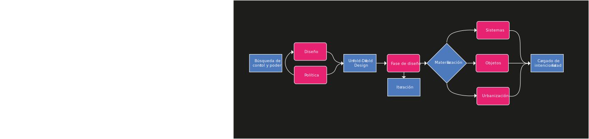

Autores:
Nombre: Fernando Domínguez Rubio
Año de nacimiento: Unknow
Lugar de nacimiento: Unknow
Se encuentra particularmente interesado en nuevas formas de producir, comunicar y reproducir ‘objetos’ y ‘personas’- emergiendo de tecnologías e infraestructuras contemporáneas. Actualmente es Investigador de la New York University (NYU) y el Centre for Research on Socio-Cultural Change (CRESC).
Nombre: Uriel Fogué
Año de nacimiento: 1976
Lugar de nacimiento: Madrid, España.
Doctor arquitecto por la UPM. Actualmente, es profesor de proyectos arquitectónicos en la École Polytechnique Fédérale de Lausanne (EPFL). Entre sus trabajos se destaca el libro “Las arquitecturas del fin del mundo”, una recopilación ensayos del mismo.
Artículo
Sobre el proyecto:
Autor

Nombre: Evan Roth
Año de nacimiento: Michigan, Estados Unidos
Lugar de nacimiento: 1978
Es un artista estadounidense que aplica la filosofía del “hackeo” en la práctica de las artes visuales en periodos de corta duración en el espacio público, “online”, y en dentro de la cultura popular.Cofundó el Free Art and Technology Lab (F.A.T. Lab). Ha trabajado bajo el seudónimo fi5e.Un gran porcentaje de sus trabajos forman parte de la colección permanente del Museum of Modern Art. El 2012, fue premiado con el Smithsonian Cooper-Hewitt National Design Award.
En qué consiste:
Relevancia:
Si hay una cosa que el diseño, el arte y la política comparten, es la necesidad del ser humano de dar a conocer sus posturas con respecto a situaciones que afectan su día a día. Estas son reflejo de los cambios socioculturales que vive progresivamente la humanidad. El uso de luz para entregar un mensaje, no solo supone la idea de un mensaje efímero pero imposible de silenciar mientras se vea, sino que también imparte la necesidad de un cambio en la forma en que nos comunicamos, donde el deseo de perdurar en el tiempo va más allá de lo físico y/o concreto; donde lo impoSrtante no es quién entregue el mensaje, si no cómo este es entregado.El proyecto de Evan Roth, permite que todos podamos acceder a nuevas formas de expresarnos, la idea de un código abierto, nos hace entender que nos encontramos en una suerte de “era de la expresión” donde son el mensaje y la intención lo que verdaderamente importa.
Vinculación:
Puntos en común
- Expresa una ideología
- Entrega un mensaje concreto y subjetivo
- Entrega un mensaje concreto y subjetivo
- Busca generar un cambio
Contrapuntos
La política, por lo general, es de pocos (los que gobiernan; democracia representativa), mientras que un proyecto opencode, todos tienen la oportunidad de participar activamente.
Alcances
Genera un cambio de paradigma en la forma de expresar opiniones.No todo lo importante es perpetuo (o duradero), se puede causar un impacto con algo que es expresado de forma fugaz
Limitaciones
Se debe usar de forma correcta, por que de lo contrario no lograra causar este dicho impacto. Al ser un opencode cualquiera puede modificarlo, y no necesariamente sería utilizado con un motivo correcto, produciéndose un efecto contraproducente, y desacreditando el movimiento.
Conclusión:
Si hay una cosa que el diseño, el arte y la política comparten, es la necesidad del ser humano de dar a conocer sus posturas con respecto a situaciones que afectan su día a día. Estas son reflejo de los cambios socioculturales que vive progresivamente la humanidad. El uso de luz para entregar un mensaje, no solo supone la idea de un mensaje efímero pero imposible de silenciar mientras se vea, sino que también imparte la necesidad de un cambio en la forma en que nos comunicamos, donde el deseo de perdurar en el tiempo va más allá de lo físico y/o concreto; donde lo impoSrtante no es quién entregue el mensaje, si no cómo este es entregado.El proyecto de Evan Roth, permite que todos podamos acceder a nuevas formas de expresarnos, la idea de un código abierto, nos hace entender que nos encontramos en una suerte de “era de la expresión” donde son el mensaje y la intención lo que verdaderamente importa.